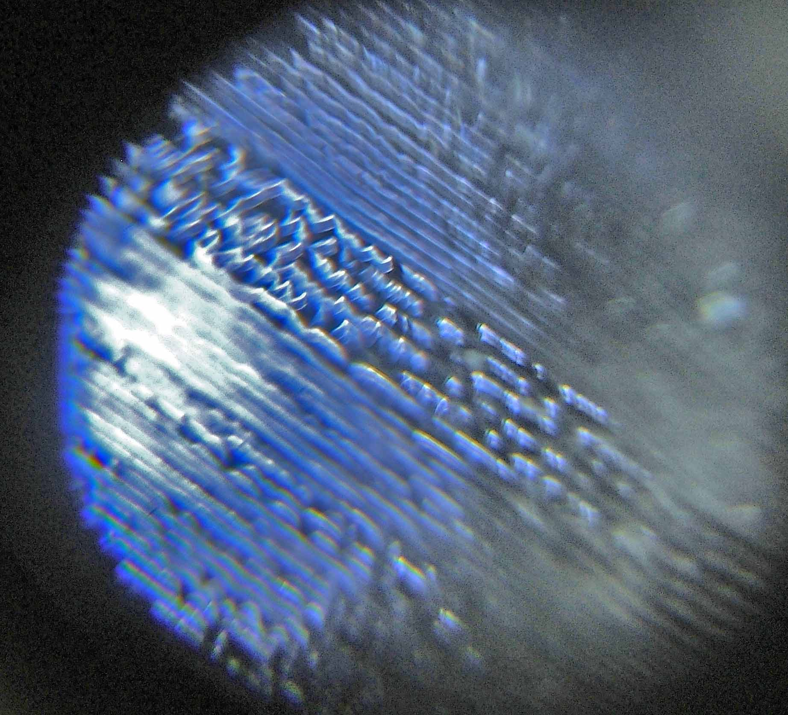
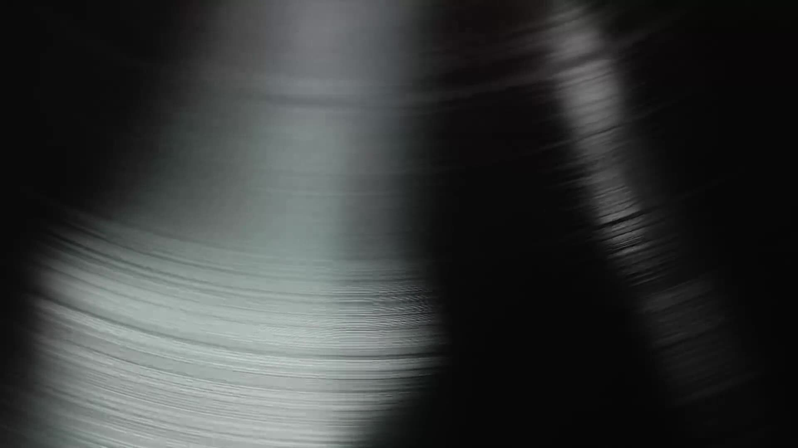
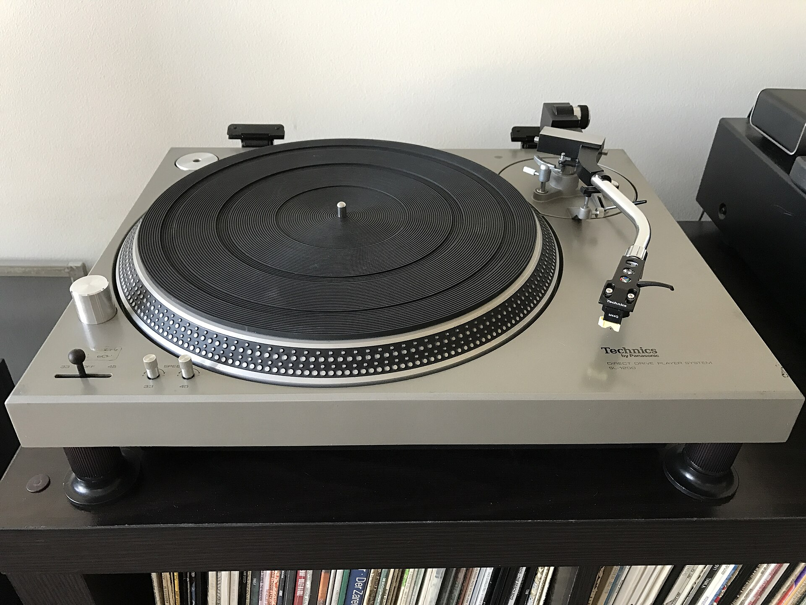

11A Lane 2 · 128.0
HighMidLow
HPFLPFVol
MuteSoloSync
Lanes
One lane per track: volume, three-band EQ with kills, high- and low-pass, mute, solo and vinyl-style sync.
A free desktop app that finds which of your Rekordbox tracks mix with the one playing, by key, BPM and energy.
Download freeFive of 8,412 tracks, ranked for the one you’re on.
Anchor 8A · four of twenty-four slots mix
Tap any key.
One track · four signals · one number
Key, tempo, energy, the blend. Tap a key on the wheel and the shortlist re-ranks from a sample library. Windows and Linux, offline.

In Rekordbox: File, then Export Collection in xml format. That one file is all Track2Mix needs to find your library.

Every track is decoded on your own machine. Three 30-second stretches, four signals, one energy number. Nothing is uploaded.

Click the track you’re on. Its compatible neighbours come back ranked. Audition them, build the set, export the M3U8 or blend it in Compose.
Library
The analysed library: filters with live counts, a Camelot wheel, a compatibility panel and a player on every row.
Playlist
A set in the right order, every transition scored, and an M3U8 that Rekordbox imports directly.
Compose
A timeline that beat-matches and blends the set, records or renders it, and saves it as a project.
Hover or focus a name.
One lane per track: volume, three-band EQ with kills, high- and low-pass, mute, solo and vinyl-style sync.
Finds each track’s beat grid and downbeat and brings it in on an 8-bar phrase of the one before, with a 4 to 32-bar blend.
Record live keeps your fader moves. Bounce renders offline, faster than real time. Export MP3 is 320 kbps with the encoder built in.
A .t2m file holds the master BPM, every lane’s mixer and every clip, and reopens after Rekordbox renumbers its ids.
No. It reads the XML you export and writes only the playlists you export, its own database, Compose projects and the audio you render. Your collection file and your audio files are never modified.
Minutes, not an evening, on every core you have: three 30-second stretches per track instead of whole files. The import screen says how many entries resolved to files on disk before anything is decoded.
Because you already trust them and they are what shows on your CDJs. A second, disagreeing key detector would add confusion, not value. A track unanalysed in Rekordbox has no key here either.
Not yet. The engine is library-agnostic, so other sources are a matter of parsers. Say which one you want when you sign up and it moves up the list.
No. It is for hearing whether a sequence works: lay the tracks out, let Auto-arrange line them up, adjust the EQ and fades, render the result. Sync is vinyl-style, so pitch follows tempo; there is no key-lock yet.
None on the money. The full app downloads free and you tip only if it earns it. A fixed price on an unproven tool would filter out exactly the DJs whose feedback matters most. What is free today stays free.